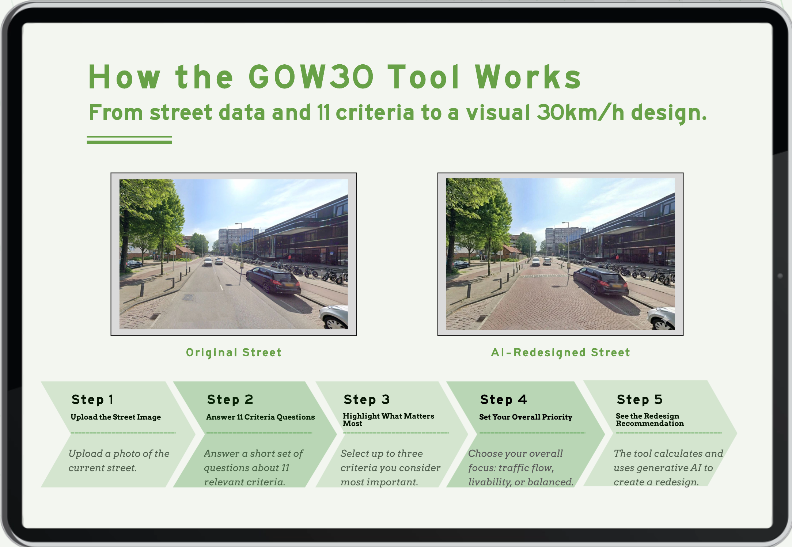

GOW30 Tool
Explainable decision-support for street redesign
This project translates complex GOW30 road redesign decisions into a clear and discussable workflow. Developed in the Amsterdam Living Lab context, the prototype helps users compare street-design alternatives by combining contextual inputs, transparent scoring logic, and visual outputs.
Instead of giving one fixed "best" answer, the tool supports dialogue between different stakeholders. It makes trade-offs explicit across safety, accessibility, public transport, freight movement, and liveability so teams can align decisions with local street conditions.
Project Highlights
Workflow
- 1. Input street context through criteria and selected priorities (found in literature and co-creation session).
- 2. Map inputs to an explainable scoring matrix of design elements.
- 3. Generate recommendation text plus a visual scenario for discussion.
- 4. Compare alternatives for traffic flow, liveability, or balanced outcomes.